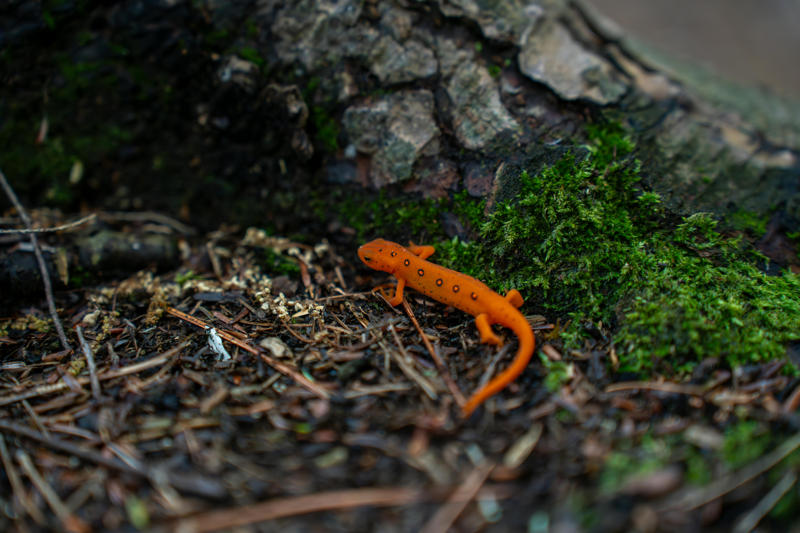

Guacamayo
El guacamayo vive en selvas tropicales de centroamérica y sudamérica. Su hábitat típico combina una alta humedad con árboles altos.
Se caracteriza por un patrón de colores llamativos, como el rojo, azul, amarillo o verde.
Es un ave, por ello es un animal que puede volar.
Sus colores sirven como forma de comunicación y de distinción entre especies.
Volver al índice

Salamandra
La salamandra de fuego habita en zonas húmedas y boscosas donde el suelo está cubierto de hojarasca y musgo.
Su piel con tonos rojos y negros brillantes actúa como advertencia para posibles depredadores, indicando que puede ser venenosa.
Este pequeño anfibio destaca por su resistencia y su forma de vida sigilosa en ambientes oscuros y húmedos.
Volver al índice
